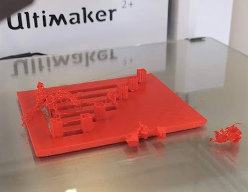
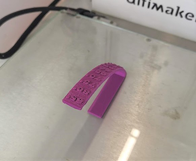

Jeanine's Website
Fusion360 3D Printing stuff
On 18 November, we were given an assignment to self learn on how to design a 3D object on Fusion360, so that we could save it as a STL file and 3D print it on the Ultimaker 2+ machine in school.
However during the making of the personalised keychain, I really wanted to input calligrphy writings to the keychain plate itself. Hence, I had referred to other tutorials, and used a different software : Adobe Illustrator, to enable me to input my chosen JPEG design onto my finalised keychain plate.

On 25 November, we were told to 3D print a product which can only be 3D printed. This means that the product has to have some sort of complexity, to make it difficult to be make through methods like cutting a piece of wood,etc. Since Christmas is near, I decided to 3D print a complex Christmas ornament.
I referred to thingiverse for ideas, and soon later, I designed a star ornament which is collapsible and rotatable. When rotated, it gives the ornament a 3D dimension to it. When collapsed, it gives the ornament a flat 2D dimension. (However, after further reaserch, I realised that this product can be made by painstakingly cutting a piece of acrylic, making my idea a fail :(.


Laser cut box assignment
After the previous assignent, we started on lessons about using Fusion360 to create a laser cut box template. Everyone simply had to learn how to draw and use Fusion360, how to later select each face to convert it into a DXF file, before opening it on Inkscape so that the file can be sent for laser cutting. I cannot remember which default instructions page did we use, but here is the attachment of my original fusion360 laser cutting box file !!
Group project
In the next few lessons, we were told to come together as a group of 4 to experiment with the 3D printer's capablity in printing.
Our group decided that we will focus on Bridging (Airiez), Overhanging (Kun Teng), Tolerance (Rifky) and Infill tests (myself).
Bridging
For bridging, due to time constraint, our group decided to set the printing speed to 100%. However, in the first round, the printing process failed terribly, forcing us to abort the printing process and restart all over again. In the second round, we adjusted the printing speed to 70% instead. This time, the printing was a success! (As seen in the picture below)

Overhanging
For overhanging, our group printed a file we found on Thingiverse due to time constraint. The printing was a success, even though there was a little defect in the printing of the base.

Tolerance
For tolerance, the file was also found on Thingiverse due to time constraint. The printing process took around 2 hours, and thankfully, nothing happened midway during the printing process. We were amazed at how the tolerance test actually spins at the "30" and "35" indications. However, the tolerance test did not spin when we held onto the other numeral indications. We are not sure if it is supposed to be like this as we were the only group to do a tolerance test at the time when we did this project. Hence, whether it is a printing defect, or it is supposed to be like this, still remains a mystery HAHA.
Infill
During the making of the infill test, I chose three different machines, with three different filament colours so that this could show obvious differences between the three different infill tests I had made. I was supposed to make 4 different infill tests. However, the 10% infill test got messed up, and it caused the printing to be unsuccessful, hence it is not presented here in my website. Also, one thing which I had to do during the printing process was to stand by and watch as the 3D printer printed the test plates. This is so as I have to stop the machine when the printing is 70% completed in order to leave the infill test plates exposed for inspection.